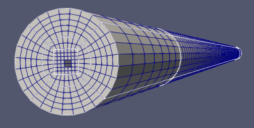
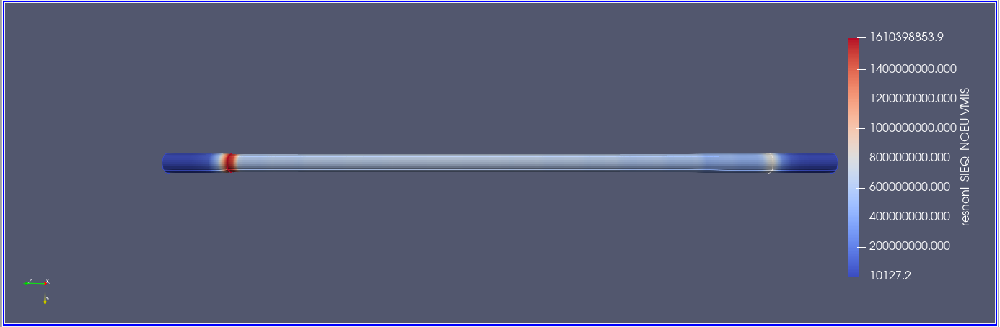
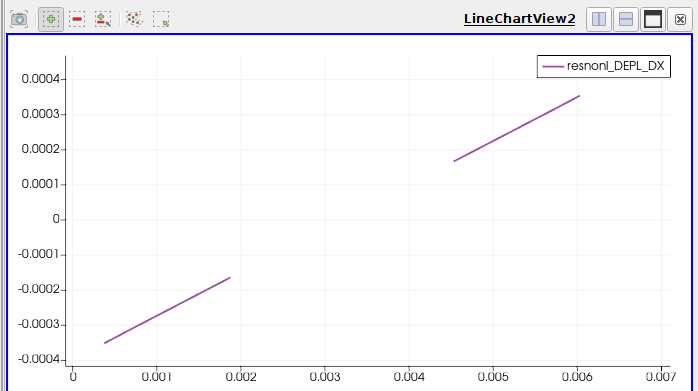
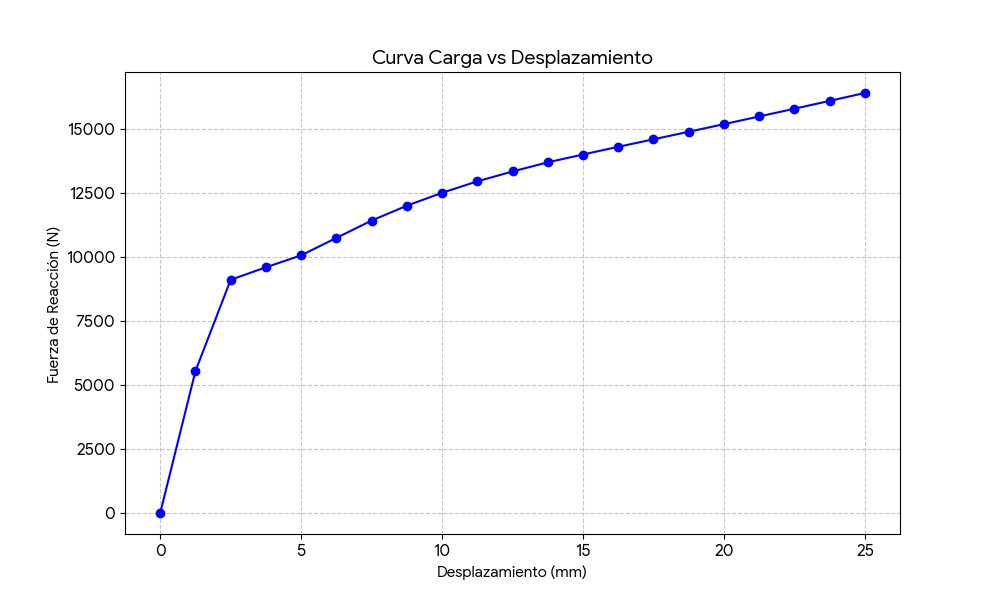

Departamento de Modelización - Universidad Tecnológica Nacional (FRSN)
La resolución se realizó mediante un análisis estático no lineal, considerando la curva de tracción experimental del SAE 1008.

Figura 1: Discretización de la probeta Ø 6.4 mm.
Ingrese los valores obtenidos en el post-proceso para calcular la respuesta mecánica real del material.
Gráficos generados a partir de los datos de reacción nodal. Los valores negativos han sido convertidos a magnitud absoluta para su análisis.

Figura 2: Campo de tensiones de Von Mises al final de la carga.

Figura 3: Medición de estricción mediante Plot Over Line.

Figura 4: Curva Sigma-Epsilon ingresada en el simulador.
Análisis contrastado con el informe de laboratorio.
| Variable | Simulación (Code_Aster) | Ensayo Real (PDF) |
|---|---|---|
| Tensión de Fluencia | 230 MPa | 288 MPa |
| Estricción ($Z$) | 23.4% | 45.0% |
| Tensión Máxima | 510 MPa (Teórica) | 397 MPa (Real) |